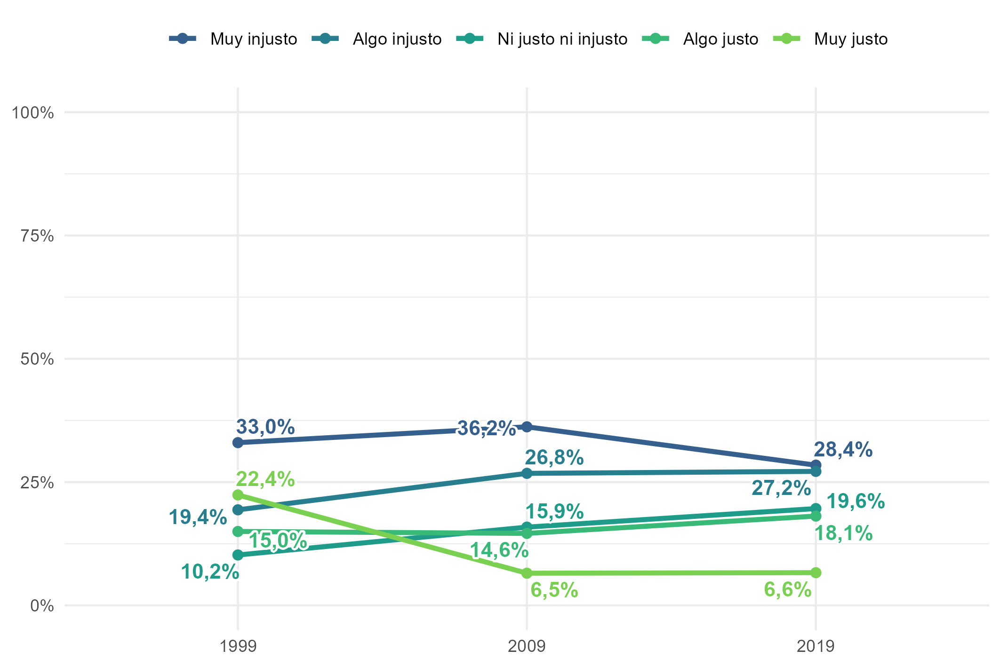

Ver código
knitr::include_graphics("output/figuras/02_justicia_mercado_olas.png")
knitr::include_graphics("output/figuras/02_justicia_mercado_olas.png")
sin_titulo(tablas$ponderados)
Año de la encuesta
|
|||
|---|---|---|---|
| 1999 | 2009 | 2019 | |
| Justicia de mercado en salud (media, 1 a 5) | 2,74 (0,073) | 2,28 (0,052) | 2,47 (0,081) |
| Decil de ingreso per cápita (media) | 5,92 (0,137) | 5,67 (0,129) | 5,62 (0,160) |
| Meritocracia, alternativa 1: 1 = menor (proporción) | 0,12 (0,014) | 0,04 (0,007) | 0,03 (0,007) |
| Meritocracia, alternativa 1: 2 (proporción) | 0,48 (0,021) | 0,08 (0,009) | 0,08 (0,012) |
| Meritocracia, alternativa 1: 3 (proporción) | 0,09 (0,011) | 0,19 (0,014) | 0,20 (0,025) |
| Meritocracia, alternativa 1: 4 (proporción) | 0,25 (0,018) | 0,45 (0,019) | 0,46 (0,025) |
| Meritocracia, alternativa 1: 5 = mayor (proporción) | 0,07 (0,011) | 0,24 (0,018) | 0,23 (0,025) |
| Brecha salarial percibida, log (media) | 3,57 (0,047) | 3,55 (0,039) | 3,00 (0,061) |
| Mujer (proporción) | 0,48 (0,018) | 0,49 (0,017) | 0,48 (0,025) |
| Edad: 29 años o menos (proporción) | 0,33 (0,019) | 0,27 (0,017) | 0,26 (0,032) |
| Edad: 30 a 59 años (proporción) | 0,55 (0,018) | 0,56 (0,018) | 0,57 (0,029) |
| Edad: 60 años o más (proporción) | 0,12 (0,011) | 0,17 (0,012) | 0,17 (0,017) |
| Educación superior completa (proporción) | 0,16 (0,017) | 0,20 (0,018) | 0,22 (0,025) |
| Estatus social subjetivo (media, 1 a 10) | 4,25 (0,082) | 4,12 (0,079) | 4,68 (0,093) |
| Posición política: izquierda (proporción) | 0,33 (0,018) | 0,26 (0,016) | 0,20 (0,031) |
| Posición política: centro (proporción) | 0,12 (0,012) | 0,15 (0,013) | 0,08 (0,015) |
| Posición política: derecha (proporción) | 0,20 (0,016) | 0,23 (0,015) | 0,18 (0,023) |
| Posición política: sin posición (proporción) | 0,36 (0,020) | 0,37 (0,020) | 0,53 (0,032) |
| n (sin ponderar) | 748 | 983 | 619 |
| Muestra analítica de la alternativa 1. Fuente: Encuestas CEP 39 (1999), 59 (2009) y 83 (2019). | |||
sin_titulo(tablas$correlaciones)| Variable | Justicia de mercado en salud | Decil de ingreso | Meritocracia (alternativa 1) | Brecha salarial (log) | Mujer | Edad (tramos) | Educación superior | Estatus subjetivo |
|---|---|---|---|---|---|---|---|---|
| Justicia de mercado en salud | 1 | |||||||
| Decil de ingreso | 0,09*** PS |
1 | ||||||
| Meritocracia (alternativa 1) | 0,02 PC |
0,01 PS |
1 | |||||
| Brecha salarial (log) | -0,03 PS |
0,17*** P |
-0,05* PS |
1 | ||||
| Mujer | -0,08** PC |
-0,12*** PS |
-0,02 PC |
-0,07** PS |
1 | |||
| Edad (tramos) | 0,02 PC |
0,03 PS |
0,04 PC |
0,02 PS |
0,00 PC |
1 | ||
| Educación superior | 0,08* PC |
0,56*** PS |
-0,00 PC |
0,18*** PS |
-0,03 PC |
-0,08* PC |
1 | |
| Estatus subjetivo | 0,05* PS |
0,37*** P |
0,03 PS |
0,06** P |
-0,05 PS |
-0,14*** PS |
0,43*** PS |
1 |
| P = Pearson; PS = polyserial (biserial con variable binaria); PC = policórica (tetracórica con dos variables binarias). | ||||||||
| * p < 0,05; ** p < 0,01; *** p < 0,001 (prueba z con el error estándar de hetcor). | ||||||||
tabla_modelos(tablas$modelos_alt1, tablas$nombres_alt1)| Modelo 1 (H1) | Modelo 2 (H2) | Modelo 3 (H3) | Modelo 4 (H4) | Modelo 5 (completo) | Modelo 6 (H5) | |
|---|---|---|---|---|---|---|
| Decil de ingreso (H1) | 0.049*** | 0.043* | 0.067 | |||
| (0.015) | (0.017) | (0.063) | ||||
| Meritocracia 2 (H2; ref. 1) | 0.442* | 0.347 | 0.944* | |||
| (0.217) | (0.219) | (0.456) | ||||
| Meritocracia 3 (H2; ref. 1) | 0.639** | 0.852*** | 0.560 | |||
| (0.219) | (0.220) | (0.447) | ||||
| Meritocracia 4 (H2; ref. 1) | 0.491* | 0.720*** | 0.837* | |||
| (0.203) | (0.208) | (0.417) | ||||
| Meritocracia 5 (H2; ref. 1) | 0.401 | 0.688** | 0.817 | |||
| (0.211) | (0.219) | (0.451) | ||||
| Brecha salarial, log (H3) | -0.085* | -0.109** | -0.109** | |||
| (0.039) | (0.042) | (0.042) | ||||
| 2009 (H4; ref. 1999) | -0.518*** | -0.766*** | -0.775*** | |||
| (0.124) | (0.131) | (0.132) | ||||
| 2019 (H4; ref. 1999) | -0.255 | -0.520*** | -0.539*** | |||
| (0.142) | (0.156) | (0.156) | ||||
| Mujer (ref. hombre) | -0.165* | -0.167* | ||||
| (0.083) | (0.083) | |||||
| 30 a 59 años (ref. 29 o menos) | -0.028 | -0.025 | ||||
| (0.109) | (0.108) | |||||
| 60 años o más (ref. 29 o menos) | 0.108 | 0.129 | ||||
| (0.131) | (0.132) | |||||
| Educación superior completa | 0.179 | 0.174 | ||||
| (0.118) | (0.119) | |||||
| Estatus subjetivo | -0.022 | -0.022 | ||||
| (0.031) | (0.031) | |||||
| Centro (ref. izquierda) | 0.399** | 0.395** | ||||
| (0.145) | (0.142) | |||||
| Derecha (ref. izquierda) | 0.166 | 0.167 | ||||
| (0.129) | (0.128) | |||||
| Sin posición (ref. izquierda) | 0.008 | 0.025 | ||||
| (0.121) | (0.120) | |||||
| Decil de ingreso x meritocracia 2 (H5) | -0.104 | |||||
| (0.072) | ||||||
| Decil de ingreso x meritocracia 3 (H5) | 0.048 | |||||
| (0.070) | ||||||
| Decil de ingreso x meritocracia 4 (H5) | -0.020 | |||||
| (0.066) | ||||||
| Decil de ingreso x meritocracia 5 (H5) | -0.022 | |||||
| (0.069) | ||||||
| Umbral 1|2 | -0.424*** | -0.245 | -0.991*** | -1.003*** | -0.754* | -0.617 |
| (0.105) | (0.195) | (0.147) | (0.106) | (0.320) | (0.459) | |
| Umbral 2|3 | 0.593*** | 0.772*** | 0.023 | 0.012 | 0.288 | 0.430 |
| (0.105) | (0.195) | (0.146) | (0.106) | (0.322) | (0.459) | |
| Umbral 3|4 | 1.267*** | 1.447*** | 0.695*** | 0.690*** | 0.982** | 1.126* |
| (0.113) | (0.199) | (0.146) | (0.110) | (0.324) | (0.460) | |
| Umbral 4|5 | 2.317*** | 2.495*** | 1.742*** | 1.752*** | 2.057*** | 2.205*** |
| (0.131) | (0.214) | (0.149) | (0.130) | (0.326) | (0.461) | |
| N | 2350 | 2350 | 2350 | 2350 | 2350 | 2350 |
| Wald meritocracia (p) | 0.067 | 0.000 | ||||
| Wald interacción (p) | 0.056 | |||||
| ***p < 0.001; **p < 0.01; *p < 0.05 | ||||||
tabla_modelos(tablas$modelos_alt2, tablas$nombres_alt2)| Modelo 1 (H1) | Modelo 2 (H2) | Modelo 3 (H3) | Modelo 4 (H4) | Modelo 5 (completo) | Modelo 6 (H5) | |
|---|---|---|---|---|---|---|
| Decil de ingreso (H1) | 0.076*** | 0.058** | 0.198 | |||
| (0.018) | (0.020) | (0.107) | ||||
| Meritocracia 2 (H2; ref. 1) | 0.621 | 0.567 | 1.126 | |||
| (0.355) | (0.341) | (0.636) | ||||
| Meritocracia 3 (H2; ref. 1) | 0.794* | 0.641 | 0.965 | |||
| (0.338) | (0.328) | (0.599) | ||||
| Meritocracia 4 (H2; ref. 1) | 0.496 | 0.416 | 1.153* | |||
| (0.330) | (0.323) | (0.586) | ||||
| Meritocracia 5 (H2; ref. 1) | 0.440 | 0.329 | 1.302* | |||
| (0.327) | (0.322) | (0.601) | ||||
| Brecha salarial, log (H3) | -0.140** | -0.158** | -0.158** | |||
| (0.052) | (0.054) | (0.055) | ||||
| 2019 (H4; ref. 2009) | 0.293* | 0.280* | 0.272 | |||
| (0.136) | (0.143) | (0.144) | ||||
| Mujer (ref. hombre) | -0.117 | -0.112 | ||||
| (0.105) | (0.105) | |||||
| 30 a 59 años (ref. 29 o menos) | -0.106 | -0.098 | ||||
| (0.142) | (0.140) | |||||
| 60 años o más (ref. 29 o menos) | 0.077 | 0.077 | ||||
| (0.164) | (0.164) | |||||
| Educación superior completa | 0.393** | 0.418** | ||||
| (0.140) | (0.142) | |||||
| Estatus subjetivo | -0.012 | -0.015 | ||||
| (0.038) | (0.039) | |||||
| Centro (ref. izquierda) | 0.351* | 0.376* | ||||
| (0.177) | (0.176) | |||||
| Derecha (ref. izquierda) | -0.031 | -0.014 | ||||
| (0.167) | (0.167) | |||||
| Sin posición (ref. izquierda) | -0.223 | -0.212 | ||||
| (0.162) | (0.160) | |||||
| Decil de ingreso x meritocracia 2 (H5) | -0.117 | |||||
| (0.121) | ||||||
| Decil de ingreso x meritocracia 3 (H5) | -0.080 | |||||
| (0.112) | ||||||
| Decil de ingreso x meritocracia 4 (H5) | -0.150 | |||||
| (0.111) | ||||||
| Decil de ingreso x meritocracia 5 (H5) | -0.189 | |||||
| (0.111) | ||||||
| Umbral 1|2 | -0.279* | -0.172 | -1.169*** | -0.588*** | -0.502 | 0.180 |
| (0.128) | (0.323) | (0.192) | (0.088) | (0.468) | (0.649) | |
| Umbral 2|3 | 0.845*** | 0.945** | -0.049 | 0.529*** | 0.660 | 1.345* |
| (0.128) | (0.319) | (0.192) | (0.081) | (0.468) | (0.648) | |
| Umbral 3|4 | 1.676*** | 1.775*** | 0.779*** | 1.357*** | 1.512** | 2.199*** |
| (0.141) | (0.321) | (0.192) | (0.091) | (0.470) | (0.648) | |
| Umbral 4|5 | 3.103*** | 3.200*** | 2.199*** | 2.779*** | 2.954*** | 3.645*** |
| (0.172) | (0.349) | (0.197) | (0.140) | (0.477) | (0.643) | |
| N | 1602 | 1602 | 1602 | 1602 | 1602 | 1602 |
| Wald meritocracia (p) | 0.124 | 0.213 | ||||
| Wald interacción (p) | 0.207 | |||||
| ***p < 0.001; **p < 0.01; *p < 0.05 | ||||||